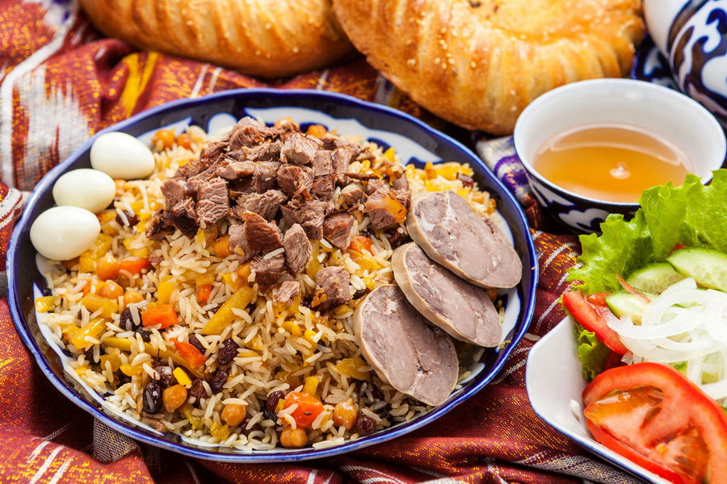
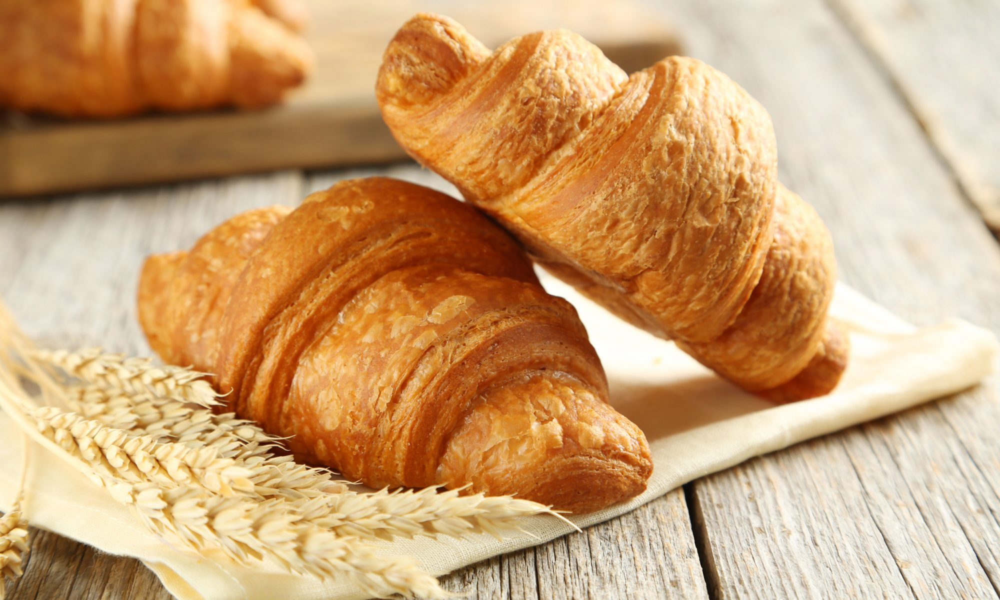

Ұлттық тағамдар галереясы
Бешбармақ (Қазақстан)
Қазақ халқының дәстүрлі ұлттық тағамы, қамыр мен еттен дайындалады.

Плов (Өзбекстан)
Өзбек халқының дәстүрлі тағамы, күріш, ет және сәбізден дайындалады.

Суши (Жапония)
Жапон асханасының танымал тағамы, күріш пен теңіз өнімдерінен жасалады.

Паста Карбонара (Италия)
Италияның атақты тағамы, макарон мен жұмыртқа-сыр тұздығымен дайындалады.
Тако (Мексика)
Жүгері немесе бидай нанында ет, көкөніс және соустармен берілетін мексикалық тағам.

Круассан (Франция)
Француздардың атақты таңғы асы, қабатталған қамырдан жасалады.